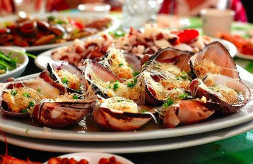

"开海节"

一直以来，广西及北海坚决贯彻落实中央重大战略决策部署，决心坚定、信心充足。侨港开海节正是贯彻落实习近平总书记关于“绿水青山就是金山银山”生态理念的一个具体行动。
经过多年打造，北海市“侨港开海节”已成为当地著名旅游节庆品牌，成为推动和促进北海市全域旅游示范区创建的闪亮招牌。北海海域的休渔期是每年的5月中旬到8月1日,每年开海，渔民都要放鞭炮，并烧纸钱“敬龙王”，以讨吉利，祈求平安，望“开海”后有一个好的收成。
开海之后当然少不了各种海鲜啦~
成熟之前
成熟之后
- 

"三月三"
每年的农历三月三，合浦人不论城乡，都会采摘一种带有特殊有臭味藤本植物叶绞汁之后，和米粉做成条状煮糖水，这就是鸡屎藤（米乙）。
北海人吃鸡屎藤（米乙）有两种传统寓意：一是据称鸡屎藤有除湿滞驱虫害的功能。而在三月三之前，北海人连续度过了春节、元宵、二月二、二月十九等民间节俗，这段时间吃的肉食多了，难免肠胃积滞，而鸡屎藤药性归心，肝，脾，肾经，具有具有祛风除湿，消食化积，解毒消肿，活血止痛的功效与作用，此时吃一些鸡屎藤（米乙）的确是有助于清除肠胃积滞，由此可见前辈的食疗智慧；
二是三月三时令正逢开春时节，万物生长，此时的鸡屎藤正是人们在开春后最早采食的野生植物之一，这是最直接的品尝春天，谓之尝春。因此，每年三月三前夕，北海城乡到处都飘散着的鸡屎藤和三杈苦的芬芳气味，成为一道独具特色民俗风景线。
"春节"
农历年初一通通关门闭户，家家贴上了红的对联，张灯结彩，鸣炮助庆。惯例初一不出街，可孩子们是最高兴的，因为红包钱的真是从头到尾都新了。“恭贺新禧，添丁发财”这句话随时随地可以听见。街头巷尾摆满了赌档，过年习俗“初一吃斋”，不得倒水落地，拜年道贺是新年见面的礼节，长辈惯给封包给小孩。正月初二头牙要拜，生意老板特别盛大，新年出街要择日，择时辰，择方向才有吉利。
"偷青"
正月十五晚，北海市民成群结队的到附近农庄菜园去偷蔬菜，偷到了生菜的是生财的预兆，偷到了葱的是说明会聪明。农民明看见了都不得吵骂、反抗，如果吵闹了，这块田明年栽种不肯生长，无形中遭受一场的损失。消极的对抗是及早拔去或施淋粪肥。
神奇的“七夕水”
农历七月初七，是我国的传统节日“七夕”。据民间流传，初七早晨头遍鸡啼后，各家即到井边或河边吸水储藏，称之为“七夕水”。传闻七夕水经久不腐，能去疮毒。“七夕”当天，一些北海的市民都会用罐子来存储一些“七夕水”。
“其实长大后，我们都明白，‘七夕水’没有那么神奇。”“七夕水”只是一种民俗，也是老北海人在那些缺医少药年代里对健康生活的向往与寄托。